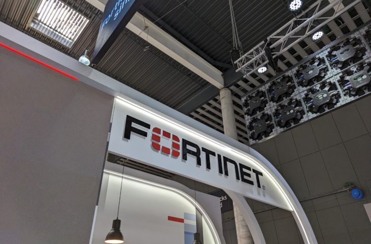

Netwerkbeveiliging voor KMO’s
Met de toenemende cyberdreigingen moeten kleine en middelgrote ondernemingen (KMO’s) zich bewapenen tegen aanvallen. Dit project biedt een kosteneffectieve, schaalbare oplossing om netwerken te beveiligen zonder grote investeringen in dure hardware.
Firewall en Intrusion Detection
Een firewall is de eerste verdedigingslinie in netwerkbeveiliging. Configureer een open-source firewall zoals pfSense, waarmee je netwerkverkeer kunt monitoren en ongeautoriseerde toegang kunt blokkeren. Combineer dit met een intrusion detection system (IDS) zoals Snort of Suricata, die verdachte activiteiten in het netwerk analyseert en alarmen genereert bij potentieel gevaar. Door deze tools correct te configureren, kun je een uitgebreide beschermingslaag bieden.
Segmentatie en VPN
Om gevoelige gegevens te beschermen, is netwerksegmentatie essentieel. Creëer afzonderlijke VLAN’s (Virtual LAN’s) voor verschillende soorten verkeer, zoals gastnetwerken, interne bedrijfsnetwerken en IoT-apparaten. Configureer daarnaast een Virtual Private Network (VPN) met tools zoals OpenVPN of WireGuard om medewerkers veilige externe toegang tot bedrijfsbronnen te bieden, vooral bij hybride werken.
Fortinet